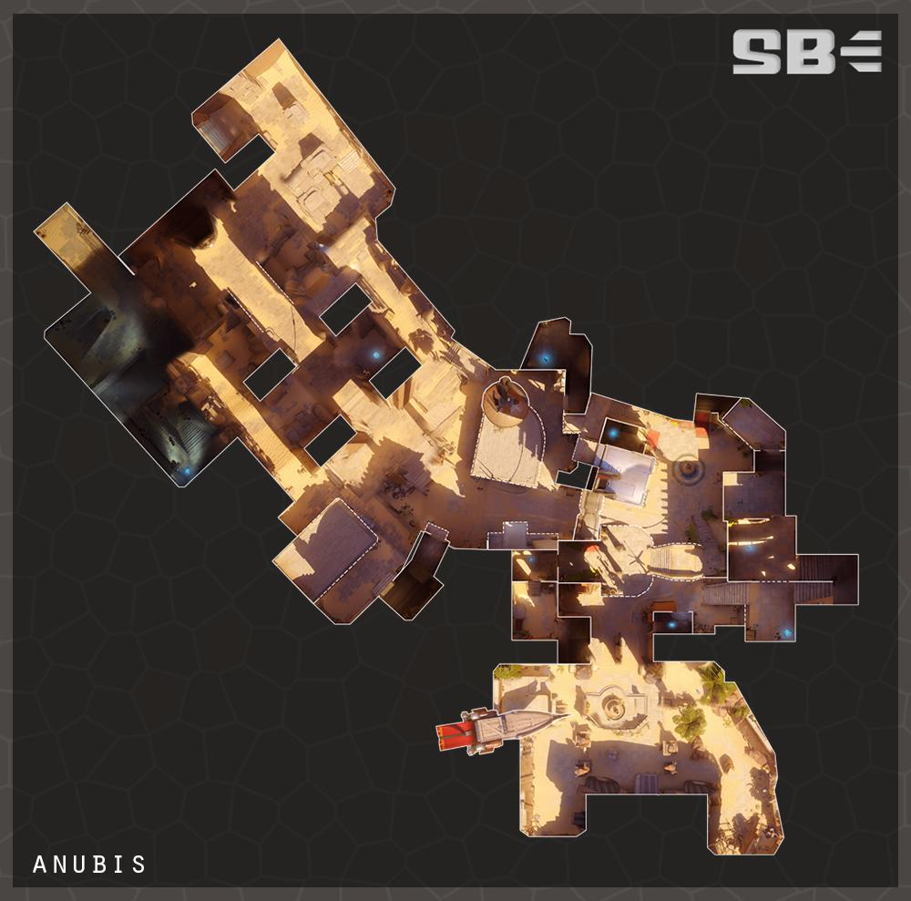

阿努比斯神廟 Temple of Anubis
回首頁
Your browser does not support the audio element.
阿
努比斯神廟坐落在開羅郊區的吉薩高原古遺址之中，是 該地區眾多新發掘地之一。雖然大多數人認為該遺址因 考古學原因而受到關注，但它也隱藏了一個延伸到地下 深處的研究設施的入口。據稱該設施收集了人工智能， 但只有少數人知道這一點。即使是螺旋國際安全公司的 代理商也不知道他們正在保護什麼。

 回首頁
回首頁